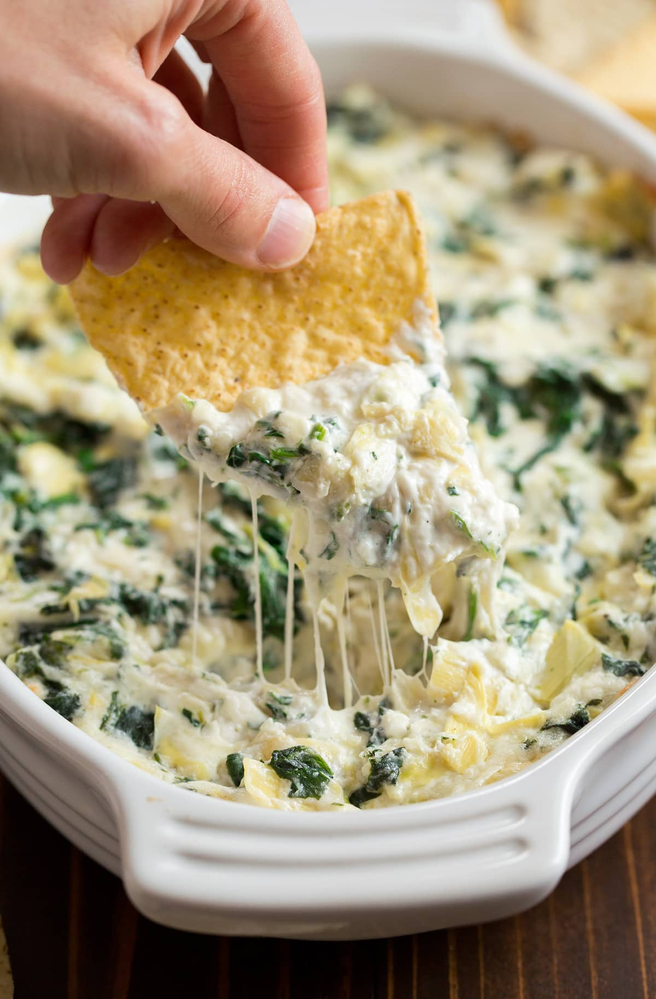

Spinach & Artichoke Dip

Spinach & Artichoke Dip
This is a classic party food that can be eaten with tortilla chips or wheat thins. Tangy
spinach and artichoke mixed with cream cheese and mozzarella.
Ingredients
- 8 oz. cream cheese, softened
- 1/4 cup sour cream
- 1/4 cup mayonnaise
- 1 garlic clove, minced
- 2/3 cup finely shredded parmesan cheese
- 1/2 cup finely shredded mozzarella cheese
- 1 can (14 oz) quartered artichoke hearts, drained and chopped
- 6 oz. frozen spinach, thawed and squeezed to drain excess liquid
- Pepper to taste
Steps
- Preheat oven to 350 degrees. Spray a small (1 quart) baking dish with non-stick cooking spray.
- In a mixing bowl stir together cream cheese, sour cream, mayonnaise, garlic, parmesan, mozzarella and pepper.
- Stir in artichokes and spinach.
- Spread mixture evenly into prepared baking dish. Bake in preheated oven until heated through and melty, about 20 minutes.
- Serve warm with tortilla chips, crackers or toasted baguette slices.